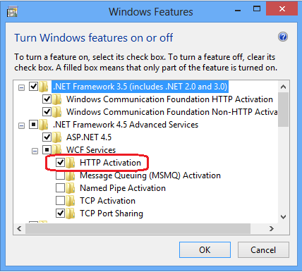

Tip: Tool for Troubleshooting when Using IIS7 and Above.
If you have IIS6 (as REST server), and a 'Forbidden error' or a 'jsonObject text must begin with..' error ocurred, when deleting or updating a record, using a transaction in smart devices, means that the svc configuracion is pending to set to All Verbs. See more information here: How to install URL Rewrite, in section IIS6.
If the 404 or 500.19 error ocurred, when RESTpage is required http://server/baseUrl/rest/transaction:
HTTP Error 404.0 - Not Found The resource you are looking for has been removed, had its name changed, or is temporarily unavailable
(other words in error: MapRequestHandler, 0x80070002 )
HTTP Error 500.19 - Internal Server Error The requested page cannot be accessed because the related configuration data for the page is invalid.
It means that:
- The Url Rewrite module is not installed, see here: How to install URL Rewrite or
- The svc files were not deployed correctly or
- an IIS configuration is pending. Svc extension registration is necessary through the command:
"%WINDIR%\Microsoft.Net\Framework\v3.0\Windows Communication Foundation\ServiceModelReg.exe" –i
Once you've installed URLRewrite, you will see everything OK in the web interface, but when you're running the Android emulator, and you execute a "Work With ......", may be you get a "Not found" message, instead of retrieving the stored data.
If you are on Windows 7, with Microsoft .Net framework 3.5.1:
- Go to "Turn Windows Features On or Off" (you can get this application by searching for "Turn Windows features"). Then go to entry labeled Microsoft .NET Framework 3.51 and check: Windows Communications Foundations HTTP Activation and Windows Communications Foundations non-HTTP Activation
If you are on framework 4.0:
- Run the command:
"%WINDIR%\Microsoft.NET\Framework\v4.0.30319\ServiceModelReg.exe" -ia
- Or , for Windows 8, check the Http Activation property on "Turn of windows features on/off"
HTTP Error 404.17 - Not Found
Make sure you allow WCF HTTP Activation. In order to do so go to 'Programs & Features' > 'Turn Windows Features on or off' In the features dialog go to 'Microsoft .NET Framework 3.0' and check 'Windows Communication Foundation HTTP-Activation'

HTTP Error 404.0 - Not Found The resource you are looking for has been removed, had its name changed, or is temporarily unavailable
In some machines, you can disable and enable again the HTTP-Activation with these commands
dism /Online /Disable-Feature /Featurename:IIS-ASPNET45 dism /Online /Enable-Feature /Featurename:IIS-ASPNET45 /all dism /Online /Enable-Feature /FeatureName:WCF-HTTP-Activation dism /Online /Enable-Feature /FeatureName:WCF-HTTP-Activation45
Make sure that the protocol of the URL (http or https) is correct according to the value set in the Protocol specification property of the environment. In that case check the event viewer, the error shown is this:
WebHost failed to process a request.
Sender Information: System.ServiceModel.Activation.HostedHttpRequestAsyncResult/34250480
Exception: System.Web.HttpException (0x80004005): There was no channel actively listening at 'http://radeploy1.cursogx.local/Idd1244569079d07f4390a24327b61d24b/workwithdevicescountry_country_list_grid1.svc/rest'. This is often caused by an incorrect address URI. Ensure that the address to which the message is sent matches an address on which a service is listening.
This problem may appear when accessing any *.svc file.
| Backlinks | ||
| Android Requirements | Angular Generator requirements | Apple Requirements |
| GeneXus 17 hardware and software requirements | ||
| How to install URL Rewrite |